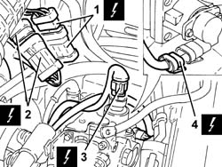
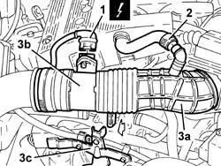
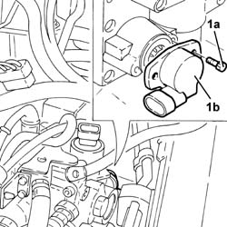
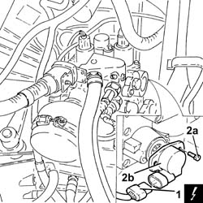
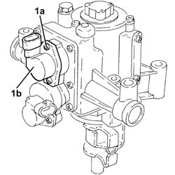

2127E40 hydraulic selection gearbox speed selection position sensor - r r
- Path
- Procedures > 21 GEARBOX > 2127 ELECTRO-HYDRAULIC SELECTION. GEARBOX EXTERNAL. CONTROLS > 2127E electric speed selection system > 2127E40 hydraulic selection gearbox speed selection position sensor - r r
- Kind
- repair procedure (removal / refitting; the operation number is the code)
- Applies to
- all engines; all production periods
- Interactive page
- https://sloeber94.github.io/elrnDB-a156/en/#/3237956
Applies to: all engines; all production periods; only with equipment: Smart gearbox
 Removing
Removing
 Refitting
Refitting5530B52 Battery DRIP TRAY/SUPPORT - R.R.
1. Disconnect the front battery electrical connection.
 | Name | Connector |
|---|---|---|
1 | Front / battery connection |
2. Disconnect the ABS electrical connection.
| Name | Connector |
|---|---|---|
2 | Front / ABS couping |
3. Disconnect the electrical connection from the gear engagement solenoid valve.
| Name | Connector |
|---|---|---|
3 | Solenoid 1 (gear engagement) |
4. Disconnect the electrical connection from the electro-hydraulic gear selection position sensor.
| Name | Connector |
|---|---|---|
4 | Speed selection potentiometer |

Applies to: all engines; all production periods; only with equipment: Smart gearbox
1. Disconnect the electrical connection from the air flow meter.
| Name | Connector |
|---|---|---|
1 | Air flow meter |
2. Disconnect the oil vapour recirculation pipe from the corrugated hose.
3. Loosen the bands and remove the corrugated hose (3a), complete with air flow meter (3b), after having released it from the mounting bracket (3c).

Applies to: all engines; all production periods; only with equipment: Smart gearbox
1. Loosen the bolts (1a) and remove the electro-hydraulic gear selection position sensor (1b).

Applies to: all engines; all production periods; only with equipment: Smart gearbox
Refitting
RemovingFit the electro-hydraulic gear selection position sensor and fix it using the bolts.
Place the corrugated hose, complete with air flow meter, back in its housing and fix it using the bands and the mounting bracket.
Connect the oil vapour recirculation pipe to the corrugated hose.
Connect the electrical connection to the air flow meter.
Connect the electrical connection to the electro-hydraulic gear selection position sensor.
Connect the electrical connection to the gear engagement solenoid valve.
Connect the ABS electrical connection and the front battery electrical connection.
Applies to: engines: 2.0 JTS, 2.0 JTS; all production periods; only with equipment: Smart gearbox
Removing
RefittingProceed with removal 5530B10 battery - r+r .
Proceed with removal 5530B52 Battery DRIP TRAY/SUPPORT - R.R. .
1. Disconnect the electrical connection from the electro-hydraulic gear selection position sensor.
| Name | Connector |
|---|---|---|
1 | Speed selection potentiometer |
2. Loosen the bolts (2a) and remove the electro-hydraulic gear selection position sensor (2b).

Applies to: engines: 2.0 JTS, 2.0 JTS; all production periods; only with equipment: Smart gearbox
Refitting
RemovingFit the electro-hydraulic gear selection position sensor and fix it using the bolts.
Connect the electrical connection to the electro-hydraulic gear selection position sensor.
Proceed with refitting 5530B52 Battery DRIP TRAY/SUPPORT - R.R. .
Proceed with refitting 5530B10 battery - r+r .
Applies to: engines: 3.2 V6; all production periods; only with equipment: Smart gearbox
Removing
RefittingProceed with removal 5530B10 battery - r+r .
Proceed with removal 5530B52 Battery DRIP TRAY/SUPPORT - R.R. .
Proceed with removal 1048A10 air cleaner filtering element - replace .
Proceed with removal 2127C48 GEAR ENGAGEMENT ELECTRO-HYDRAULIC SELECTION DEVICE - R.R. .
1. Loosen the bolts (1a) and remove the electro-hydraulic gear selection position sensor (1b).

Applies to: engines: 3.2 V6; all production periods; only with equipment: Smart gearbox
Refitting
RemovingPlace the gear selection position sensor for the electro-hydraulic selection gearbox back in its housing taking care to charge the potentiometer, then fasten it using the bolts.
Proceed with refitting 2127C48 GEAR ENGAGEMENT ELECTRO-HYDRAULIC SELECTION DEVICE - R.R. .
Proceed with refitting 1048A10 air cleaner filtering element - replace .
Proceed with refitting - 0010T47 hydraulic system fluid for gearbox with hydraulic selection check level and top up if necessary .
Proceed with refitting - 0010T48 hydraulic system for gearbox with hydraulic selection bleed air .
Proceed with refitting 5530B52 Battery DRIP TRAY/SUPPORT - R.R. .
Proceed with refitting 5530B10 battery - r+r .
Topics linked from this page (9)
- 1048A10 air cleaner filtering element - replace
- 2127C48 GEAR ENGAGEMENT ELECTRO-HYDRAULIC SELECTION DEVICE - R.R.
- 5530B10 battery - r+r
- 5530B52 Battery DRIP TRAY/SUPPORT - R.R.
- D3 Front / battery connection
- D5 Front / ABS couping
- K41 Air flow meter ( ENGINE )
- K68 Speed selection potentiometer
- L51 Solenoid 1 (gear engagement)